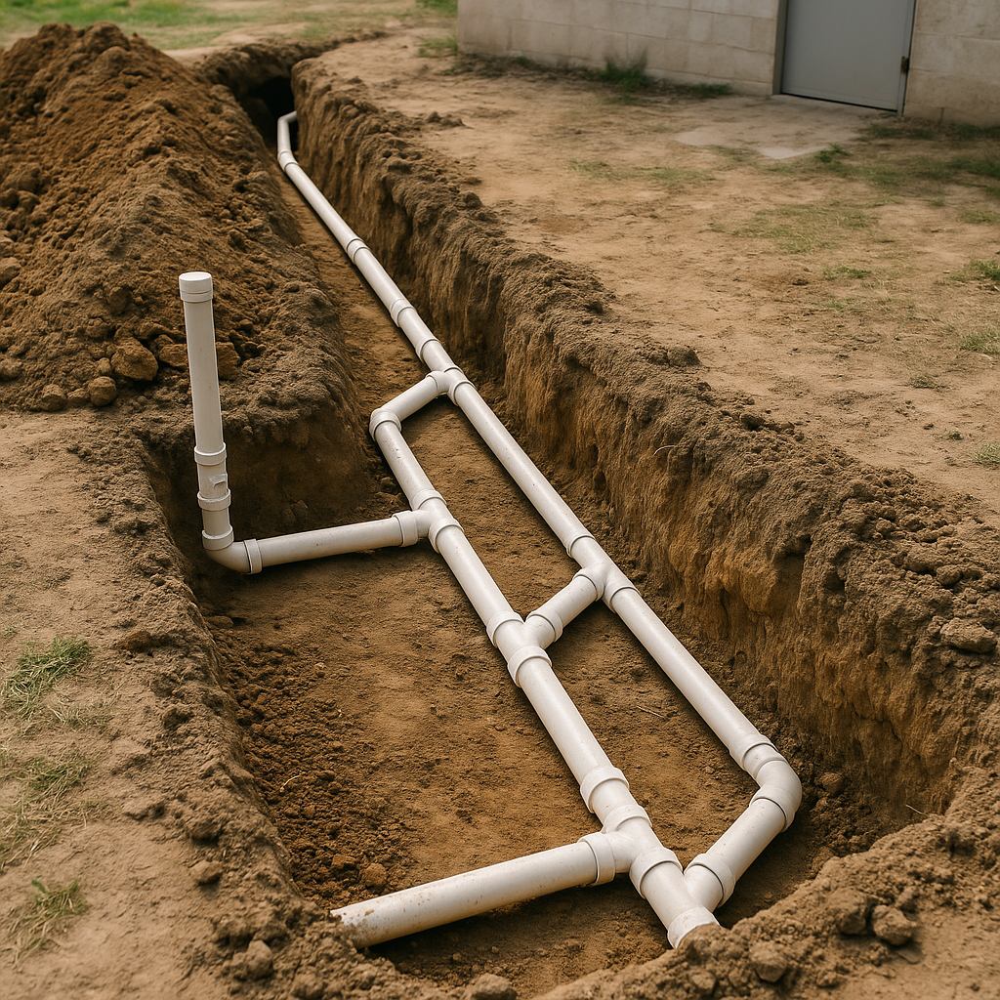

We offer a complete range of underground plumbing and excavation services to meet your needs—from residential installs to large-scale commercial projects.
Our professional team uses modern equipment and techniques to deliver reliable results on time and on budget.